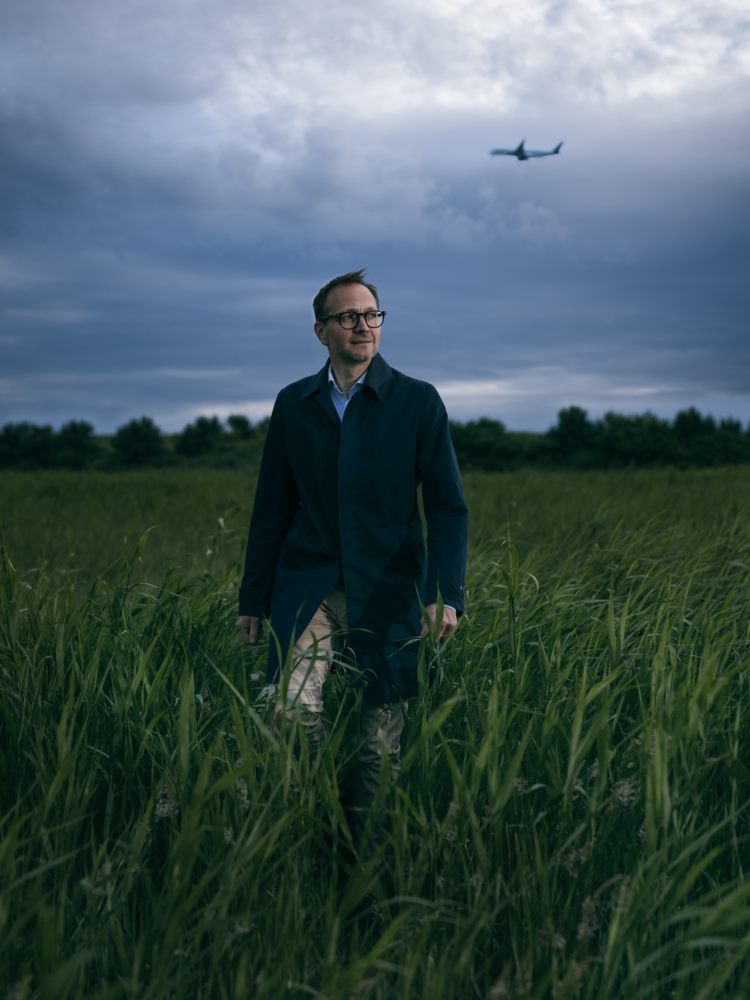

Het Noordzee kanaal Gebied
Het Noordzeekanaal verbindt Amsterdam met de zee. Een landschap van industrie en natuur, van containerschepen en reigers. Een gebied in transitie.

Wieslaw snijdt oude stoomleidingen door bij de sloop van de energiecentrale Hemweg 08.
Sinds 2019 sloot deze centrale van Vattenfall, als onderdeel van de energietransitie. Het puin (o.a. 140.000 ton beton en 40.000 ton staal) wordt hergebruikt.
Locatie: Westelijk Havengebied Amsterdam


Jolanda, hoofdoperator bij het afvalenergiebedrijf AEB Amsterdam.
AEB zet restafval om in stoom, waarmee zij elektriciteit opwekt voor zo'n 365.000 huishoudens en warmte levert aan 40.000 woningen in Amsterdam-Noord via stadsverwarming. Vanaf 2028 vangt AEB ook CO₂ af en zet zo de volgende stap naar een nóg duurzamere, circulaire toekomst voor de regio.
Locatie: Westelijk Havengebied Amsterdam

Manon, omgevingsmanager voor de Energiehaven
De Energiehaven IJmond wordt een haven specifiek gericht op de bouw van windparken op zee. Deze komt op de plaats waar nu de Averijhaven ligt. De ontwikkeling van de Energiehaven is een samenwerking tussen provincie Noord-Holland, gemeente Velsen, Zeehaven IJmuiden en Port of Amsterdam. Ook het Rijk en Tata Steel zijn betrokken.
Locatie: IJmond


Jimmy, stuwadoor bij HES Bulk Terminal Amsterdam.
Jimmy verplaatst allerlei bulkgoederen met diverse machines en bedient ook grote kranen. Op het terrein van HES Bulk Terminal Amsterdam is goed te zien dat kolenvelden steeds meer plaats maken voor andere bulkgoederen zoals duurzame bouwmaterialen en agri-producten zoals granen.
Locatie: Westelijk Havengebied Amsterdam

Lousanne, directeur van het Programmabureau Noordzeekanaalgebied (NZKG).
In dit gebied moet plaats worden gemaakt voor een 380 kV transformatorstation om de regio van voldoende stroom te blijven voorzien. Tegelijk vragen natuur, water en andere toekomstige functies om plek. Het Programmabureau NZKG brengt dit samen met partijen in beeld en helpt keuzes te maken.
Locatie: Houtrakpolder
De Locaties
Van IJmuiden tot Amsterdam — het Noordzeekanaalgebied in beeld

Etteray, procesoperator bij EVOS. Hij controleert leidingen waardoor benzine of diesel naar de tanks stroomt.
EVOS is actief in opslag en overslag van brandstoffen. Er is een pijpleidingverbinding naar Schiphol voor aanvoer van Jet Fuel. De tanks zijn klaar voor opslag van duurzame biobrandstoffen voor klanten en er wordt gekeken naar mogelijkheden voor waterstof.
Locatie: Westelijk Havengebied Amsterdam


Leon werkt als monteur bij Olam food ingredients (ofi) in Koog aan de Zaan.
Ofi is een leverancier van cacaopoeder, boter en massa. De producten van ofi vind je o.a. terug in OREO en de Mars. Door verbranding van eigen cacaodoppen in een biomassa installatie voor het maken van stoom is het aardgasverbruik gehalveerd.
Locatie: Zaanstreek

Koen, Field Service Engineer bij Strohm.
Strohm maakt sterke, lichte buizen die worden gebruikt om olie, gas, waterstof of CO₂ veilig door te voeren. Ze roesten niet, zijn makkelijk te installeren en gaan lang mee. Zo helpen ze hun klanten duurzamer te werken en dragen ze bij aan een schonere energievoorziening.
Locatie: IJmond

Jaap, projectdirecteur Hollandse Kust West van TenneT.
Via het 380 kV transformatorstation Wijk aan Zee van TenneT komt energie van windmolens vanaf zee op het hoogspanningsnet. Dit bedient ruim 2 miljoen huishoudens. Nu zorgen windparken in Nederland voor 16% van de elektriciteit. Omdat de vraag naar elektriciteit enorm stijgt, moeten er meer windparken en transformatorstations bijkomen.
Locatie: IJmond

Jan werkt bij de havendienst van de Zeehaven IJmuiden waar hij onder andere schepen aansluit op walstroom.
Een aansluiting op het elektriciteitsnet van de wal zorgt voor veel minder schadelijke uitstoot en geluidsoverlast dan het laten draaien van dieselmotoren. In de toekomst hopen ze meer walstroomaansluitingen te realiseren.
Locatie: IJmond

Angeliki leidt bij Tata Steel Nederland (TSN) de teams die de DeNOx gaan testen.
Deze installatie wordt nu gebouwd en reduceert straks de uitstoot van stikstof (NOx). Samen met de grootste stofzuiger van Nederland (tegen stof, lood en andere zware metalen) en de nieuwe waterzuiveringsinstallatie maakt 'ie de industrie schoner. In 2045 wil de staalgigant zelfs volledig klimaatneutraal zijn.
Locatie: IJmond

Willem, Installatietechnicus Elektro en Instrumentatie bij het compressor- en mengstation Beverwijk van Gasunie.
Gasunie test of de bestaande aardgasleiding tussen Spaarndam en Beverwijk geschikt is voor het transport van waterstof. De verwachting is dat er in het Noordzeekanaalgebied in 2030 naast aardgas ook waterstof wordt getransporteerd.
Locatie: Heemskerk

Anita, medewerker bij de divisie Organics van Renewi waar ze organische reststoffen verwerken en omzetten in biogas.
Renewi zamelt afval in en recyclet het weer tot bruikbare materialen, zoals papier, metaal, kunststof, glas, hout, bouwstoffen, compost en energie. Daarmee draagt het concreet bij aan een circulaire en duurzame economie.
Locatie: Westelijk Havengebied Amsterdam

Guus is werkzaam bij HYCC als project development manager van waterstoffabriek H2era.
Deze 500 megawatt elektrolyser is een van Europa's grootste groene waterstof initiatieven. Met deze fabriek willen we vanaf 2030 windenergie van zee optimaal omzetten naar groene waterstof voor de industrie & transport.
Locatie: Westelijk Havengebied Amsterdam